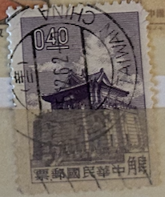
| SOURCE | TITLE| IMAGE MATCH | click to source page |
| eBay | Travelstamps: China Stamp Scott #1271a Chu Kwang Tower Mint No Gum MNG | eBay | 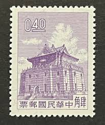 |
| HipStamp | China - #1271 Chu KwangTower - Used | Asia - China, General Issue Stamp / HipStamp | 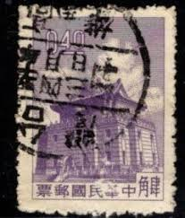 |
| HipStamp | China (Empire/Republic of China) #1127/1274 Multiple | Asia - Indo-China, General Issue Stamp / HipStamp | 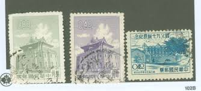 |
| Etsy | Chinese Stamp - Etsy | 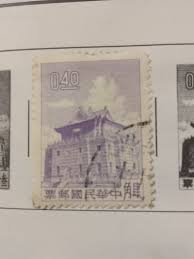 |
| eBay UK | China Taiwan Stamps for sale | eBay UK | 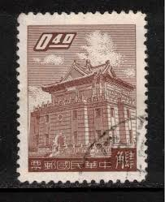 |
| eBay | Cancelled to Order/CTO First Day Cover Chinese Stamps for sale | eBay | 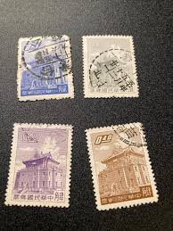 |
| HipStamp | Free China 1960 Taiwan 3¢ Chu Kwang Block Scott # 1270 VFU U409 | Asia - China, General Issue Stamp / HipStamp | 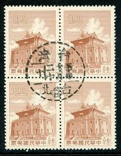 |
| eBay | Architecture Used Postage Chinese Stamps for sale | eBay |  |
| eBay | Travelstamps: China Stamp Scott #1274a Chu Kwang Tower Mint No Gum MNG | eBay Australia | 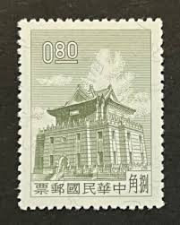 |
| eBay | 1961-1970 Year of Issue Chinese Stamps for sale | eBay | 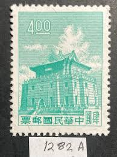 |
| eBay | China -40c Purple "Chu Kwang Tower" Used - #3629 | eBay | 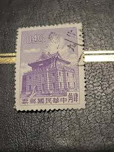 |
| eBay | China -40c Brown "Chu Kwang Tower" Used - #3628 | eBay | 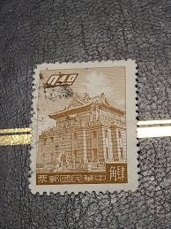 |
| Alamy | Chinese postage stamps hi-res stock photography and images - Alamy | 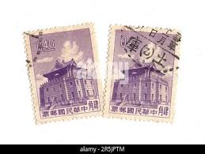 |
| eBay | Travelstamps: China Stamp Scott #1270a Chu Kwang Tower Mint No Gum MNG | eBay | 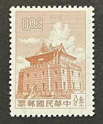 |
| Alamy | Postmarked stamp from Taiwan in the Chu Kwang Tower, Quemoy series Stock Photo - Alamy | 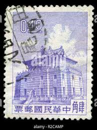 |
| eBay | 1950 TAIWAN ROC CHINA STAMP #1017 WITH BILINGUAL TAINAN SON CANCEL | eBay | 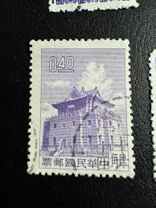 |
| Etsy | Buy Taiwan 1962 Chu Kwang Tower Stamps – Selection of 5, Mint & Used Online in India - Etsy | 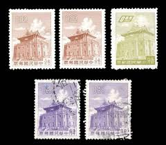 |
| eBay | China - 3.20 Purple "Chu Kwang Tower" Used - #3643 | eBay | 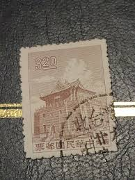 |
| eBay | China - 2.00 Green "Chu Kwang Tower" Used - #3641 | eBay | 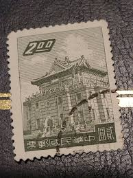 |
| eBay | Superb Postage Chinese Stamps for sale | eBay | 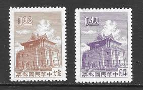 |
| eBay | Taiwan 1275, MNH. Michel 380. Chu Kwang Tower, Quemoy, 1960. | eBay | 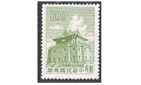 |
| eBay | Pink Chinese Stamps for sale | eBay | 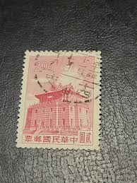 |
| eBay | ROC China - Scott #1221- 40c Brown "Chu Kwang Tower" Canc/LH 1959 | eBay | 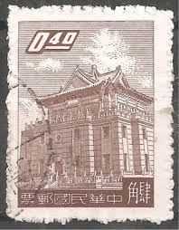 |
| TaiBIF | Tax 21 Kinmen Chu Kwang Tower Stamps of 2nd Print Converted into Postage Due Stamps(1964) (G021) | Digital Taiwan - Images | 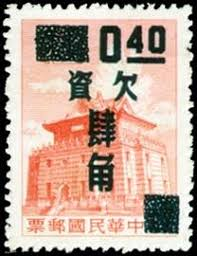 |
| Bob Shop | Bulklots and Thematic Collections - Stamps Thematic Architecture ULH was listed for 0.00 on 29 Mar at 14:01 by WilEC6084 in Venterstad (ID:638125358) | 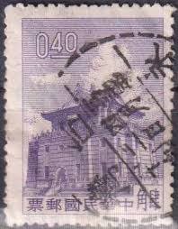 |
| eBay | China Taiwan Building 3 diff stamp used on TAKAU Medical College cover to USA | eBay | 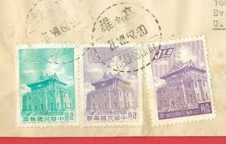 |
| HipStamp | Taiwan Scott#1221 1959 CHU Kwang Tower, Quemoy - Used | Asia - China, General Issue Stamp / HipStamp | 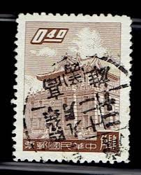 |
| eBay | CHINA TAIWAN 1224 - Chu Kwang Tower, Quemoy (pa58070) | eBay | 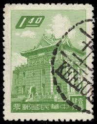 |
| eBay | Mint No Gum/MNG Architecture Chinese Stamps for sale | eBay | 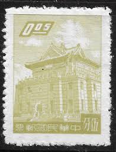 |
| HipStamp | China stamp, Scott#1271, used, hinged, #1271 | Asia - China, General Issue Stamp / HipStamp | 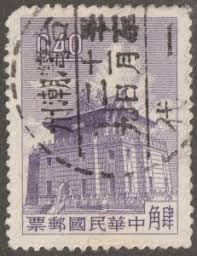 |
| Dreamstime.com | Building, Chu Kwang Tower, Quemoy Serie, Circa 1963 Editorial Stock Image - Image of philately, circa: 145673799 |  |
| CHINA - CIRCA 1959: Postage stamp printed in China (Taiwan), shows Chu Kwang Tower, an island Quemoy, circa 1959 Stock Photo - Alamy | 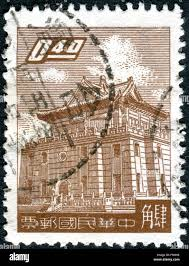 | |
| eBay | CHINA TAIWAN J132 - Chu Kwang Tower "Postage Due" (pb22545) | eBay | 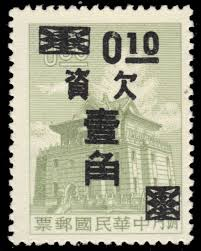 |
| eBay | China -5c Olive Green "Chu Kwang Tower" Used - #3621 | eBay | 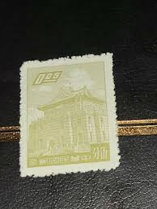 |
| Alamy | New taiwan dollar hi-res stock photography and images - Alamy | 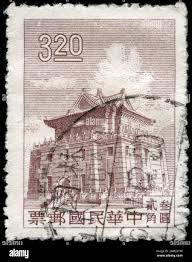 |
| Alamy | Postage stamp taiwan hi-res stock photography and images - Alamy | 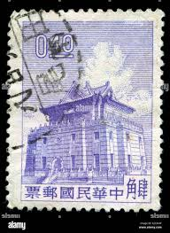 |
| eBay | RoC China - Scott #1224- $1.40 Yellow Green "Chu Kwang Tower" Canc/LH 1959 | eBay | 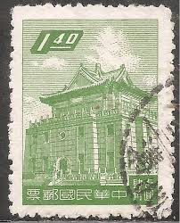 |
| eBay | China -3c Brown "Chu Kwang Tower" Used - #3619 | eBay | 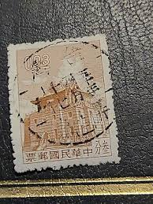 |
| eBay | ROC China - Scott #1278- $2 Carmine Rose "Chu Kwang Tower" Canc/LH 1961 | eBay | 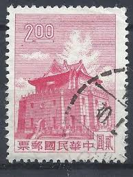 |
| Hello friends ! Does anyone have any info on those stamps ? I can't find anything on them. Any help is appreciated ! : r/philately | 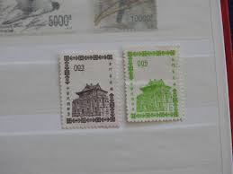 | |
| Dreamstime.com | 262 Chu Tower Stock Photos - Free & Royalty-Free Stock Photos from Dreamstime | 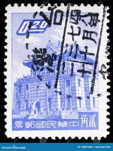 |
| Alamy | Postage stamp from Taiwan in the Definitive Chungshan Building (1968) series Stock Photo - Alamy | 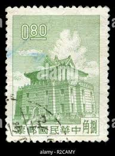 |
| Identify unknown stamp country of origin? | 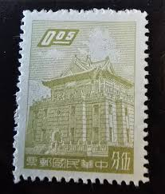 | |
| eBay | China -10c Purple "Chu Kwang Tower" Used - #3624 | eBay | 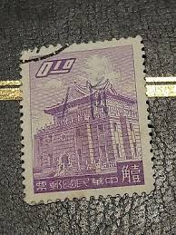 |
| Etsy | Vintage Postage Stamp From China - Etsy Australia |  |
| Alamy | Chu kwang tower hi-res stock photography and images - Alamy |  |
| Alamy | Postmarked stamp from Taiwan in the Chu Kwang Tower, Quemoy series Stock Photo - Alamy | 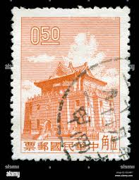 |
| eBay | China Stamps Briefmarken Sellos Timbres | eBay | 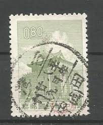 |
| Alamy | Postmarked stamp from Taiwan in the Chu Kwang Tower, Quemoy series Stock Photo - Alamy | 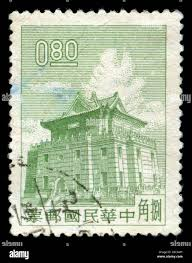 |
| Alamy | Postage stamp from Taiwan in the Definitive Chungshan Building (1968) series Stock Photo - Alamy | 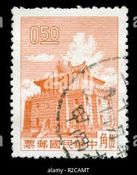 |
| HipStamp | RO China, Taiwan 1964-5 Surcharged as Postage Due (3v Cpt) MNH | Asia - China, Postage Due Stamp / HipStamp | 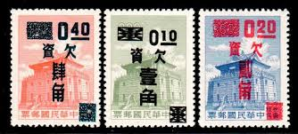 |
| eBay | RoC China - Scott #1220- 20c Ultra "Chu Kwang Tower" Canc/LH 1959 | eBay |  |
| eBay | Stamps Angola Cameroun Leipziger Messe Jamaica Nice Gronland | eBay | 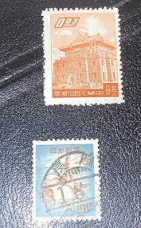 |
| Alamy | CHINA - CIRCA 1960: a stamp printed in the China shows Chu Kwang tower, Quemoy, circa 1960 Stock Photo - Alamy | 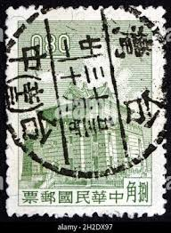 |
| eBay | ROC China - Scott #1220- 20c Ultra "Chu Kwang Tower" Canc/LH 1959 | eBay | |
| Shutterstock | Ancient Chinese Postage Stamps: Over 1,029 Royalty-Free Licensable Stock Photos | Shutterstock | |
| Anyone interested ??1🙈🙊🙉👌 | ||
| eBay | 1959 China | eBay | |
| eBay | ROC China - Scott #1222- 50c Bluish Green "Chu Kwang Tower" Canc/LH 1959 | eBay | |
| eBay | Stamp Asia China Chu Kwang Tower, Quemoy 1959 & 60 A144 A158 | eBay |